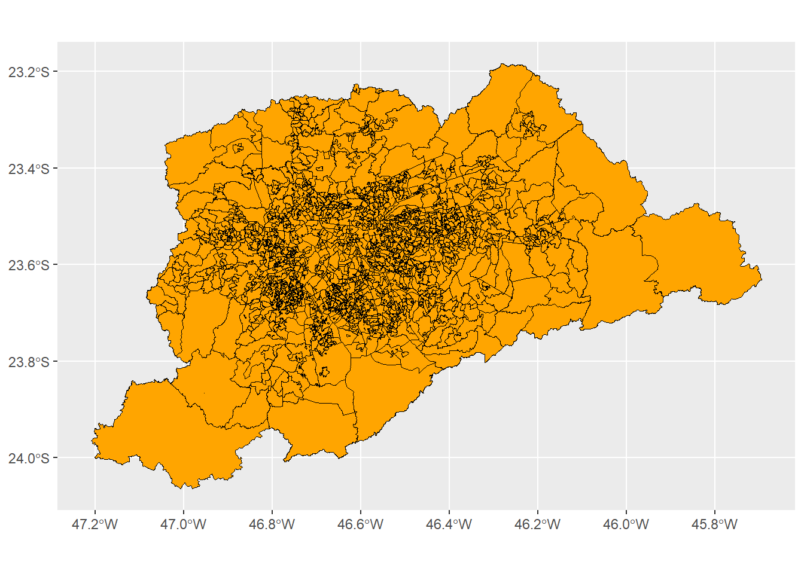
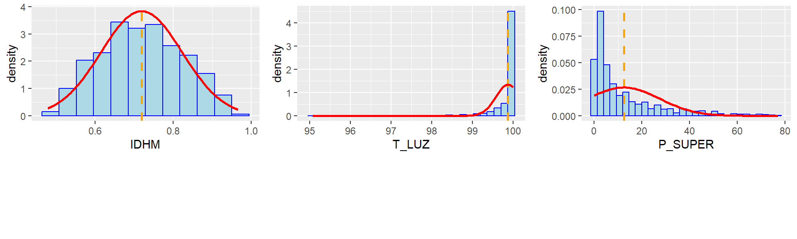
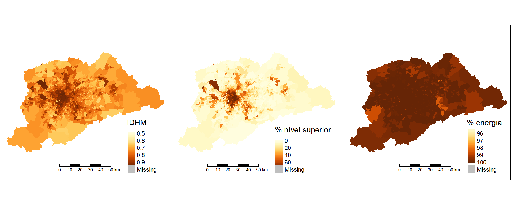
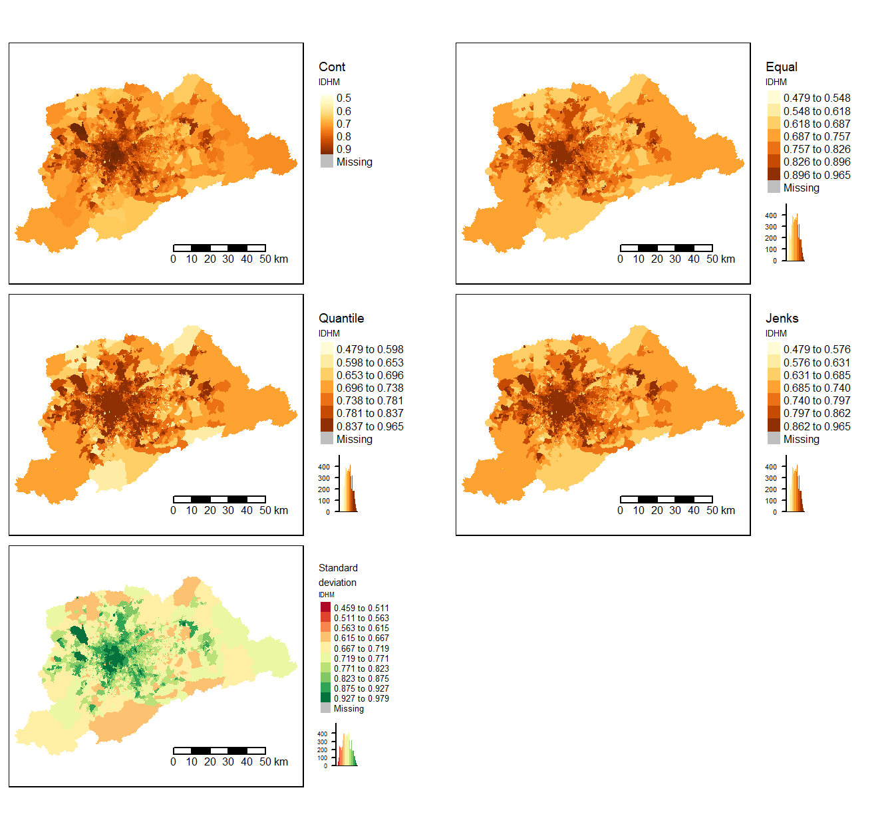
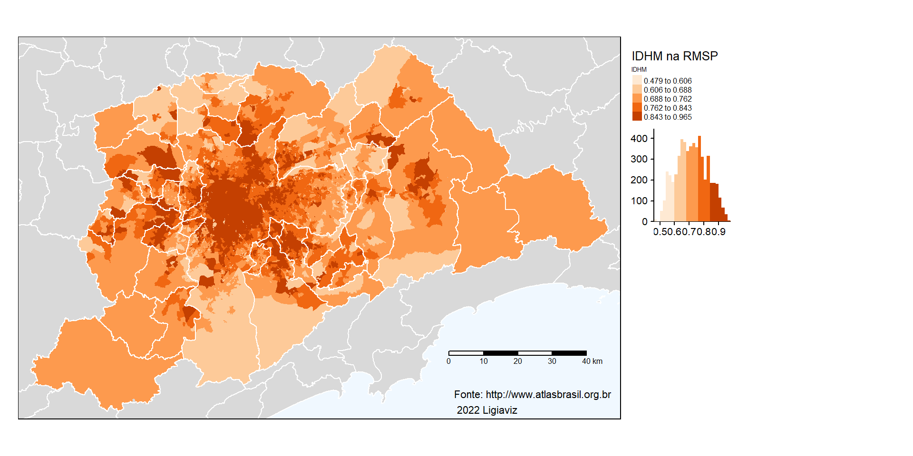

10 Dados quantitativos relativos: mapa coroplético
Vimos na Figura 4.1 que podemos classificar os dados em qualitativos e quantitativos. Sendo um dado quantitativo, devemos classificá-se como absoluto ou relativo. As representações por figuras geométricas proporcionais e por densidade de pontos, vistas nos itens anteriores, tratavam de valores absolutos ou contagens. Quando os dados se referem a índices, taxas, porcentagens, densidades, ou seja, qualquer resultado de uma divisão, são classificados como relativos. O conceito envolvido neste tipo de dado não é o de proporcionalidade (como nos dados absolutos), mas o de ordem. A transcrição gráfica da ordem se faz pelas variáveis visuais valor, cor ordenada ou granulação ordenada. Esta representação é a coroplética, a mais frequentemente utilizada em Cartografia Temática. Utilizaremos como exemplos três indicadores na escala intraurbana da Região Metropolitana de São Paulo (RMSP), calculados para as Unidades de Desenvolvimento Humano (UDHs). Com base em dados provenientes de diversas fontes, tais como, Ministério da Saúde (DATASUS/SIM, SINASC, SIH/SUS), Ministério da Educação (Censos Escolares), MapBiomas, Ministério da Cidadania (CadÚnico, Bolsa Família e BPC), Ministério da Economia (RAIS), Tribunal Superior Eleitoral, Ministério do Desenvolvimento Regional (SNIS) e IBGE (Contas Nacionais), o PNUD, a Fundação João Pinheiro e o Instituto de Pesquisa Econômica Aplicada (IPEA) desenvolveram o Atlas do Desenvolvimento Humano no Brasil, publicado em 2013. Foram criadas malhas de UDHs para as Regiões Metropolitanas (RMs) a partir do agrupamento de unidades com a maior homogeneidade interna possível.
Para a elaboração destes mapas precisaremos dos valores dos indicadores para cada UDH da RMSP. A base cartográfica será a malha de UDHs da RMSP disponível no site do Atlas Brasil.
Para darmos início, vamos limpar a memória, verificar e definir o diretório de trabalho.
## [1] "C:/Users/l_viz/Documents/RCartoTematica"#para ajustar a lingua para portugues usando a funcao
Sys.setlocale(category = "LC_ALL", locale = "pt_BR.UTF-8")## [1] "LC_COLLATE=pt_BR.UTF-8;LC_CTYPE=pt_BR.UTF-8;LC_MONETARY=pt_BR.UTF-8;LC_NUMERIC=C;LC_TIME=pt_BR.UTF-8"Vamos carregar os pacotes que serão utilizados.
library(R.utils)
library(tidyverse)
library(sf)
library(ggplot2,warn.conflicts=FALSE)
library(ggspatial)
library(archive)
library(readxl)
library(gridExtra)##
## Attaching package: 'gridExtra'## The following object is masked from 'package:dplyr':
##
## combine10.1 Bancos de dados
O arquivo shapefile das UDHs está disponível de forma compactada junto com os indicadores por RM no sítio do Atlas Brasil. Como em capítulos anteriores, faremos o download do arquivo zip após a identificação da url dos dados. Para baixar os dados, usaremos a função download.file do pacote R.utils.
#se quiser identificar a url de um determinado conjunto de dados, faça o download do arquivo desejado manualmente e clique em Ctrl+J. O navegador mostrará o caminho completo, que poderá ser copiado. Para o download do arquivo com as UDHs da RMSP, use o comando a seguir. Use o nome do arquivo como arquivo de destino (destfile)
download.file(url = "https://dv69vw.dm.files.1drv.com/y4mGCIOeG89QN-sOTMEQ4X1lyzmraQiwh4LzSTYvcxb9rrvkkmW_Am300R8_-WB_hZ-qtfPffeEoJ0rRVFpUV95lvP-nOvxI1Q-5iQzqHAwPeWMy8uDZ1pBM918KVAmFUFWpfWRIcINlOg1T9ooCQcVE_Qg42gmf-zjrX6IfvtU2e3Ca6ADD8ZDXNpSSrnjroE8490cc8CK9AHk_OY3rQ8-Ow", destfile = "dados_sp.zip", mode="wb")O arquivo “RM 63500 São Paulo - Base UDH 2000_2010.xlsx” contém os indicadores que usaremos para a elaboração dos mapas. Vamos ler o arquivo xlsx e criar um objeto em R com o nome de “dadosUDH”.
#para ler o arquivo xlsx
dadosUDH <- read_excel("RM 63500 São Paulo - Base UDH 2000_2010.xlsx")
#para ver as 6 primeiras linhas de dadosUDH
head(dadosUDH)## # A tibble: 6 × 237
## Cod_ID UDH_Atlas NOME_UDH CODMUN6 NOME_MUN CODUF NOME_UF CODRM
## <dbl> <dbl> <chr> <dbl> <chr> <dbl> <chr> <dbl>
## 1 1350390100001 1.35e12 Fazenda… 350390 Arujá (… 35 SP 63500
## 2 1350390100002 1.35e12 Arujá :… 350390 Arujá (… 35 SP 63500
## 3 1350390100003 1.35e12 Arujá :… 350390 Arujá (… 35 SP 63500
## 4 1350390100004 1.35e12 Arujá :… 350390 Arujá (… 35 SP 63500
## 5 1350390100005 1.35e12 São Ben… 350390 Arujá (… 35 SP 63500
## 6 1350390100006 1.35e12 Arujá :… 350390 Arujá (… 35 SP 63500
## # ℹ 229 more variables: NOME_RM <chr>, ANO <dbl>, ESPVIDA <dbl>,
## # FECTOT <dbl>, MORT1 <dbl>, MORT5 <dbl>, SOBRE40 <dbl>,
## # SOBRE60 <dbl>, RAZDEP <dbl>, T_ENV <dbl>, E_ANOSESTUDO <dbl>,
## # T_ANALF11A14 <dbl>, T_ANALF15A17 <dbl>, T_ANALF15M <dbl>,
## # T_ANALF18A24 <dbl>, T_ANALF18M <dbl>, T_ANALF25A29 <dbl>,
## # T_ANALF25M <dbl>, T_ATRASO_2_BASICO <dbl>, T_ATRASO_2_FUND <dbl>,
## # T_FBBAS <dbl>, T_FBFUND <dbl>, T_FBMED <dbl>, T_FBSUPER <dbl>, …O arquivo xlsx que foi aberto tem 237 colunas, das quais 227 são indicadores criados para o Atlas Brasil.
## Reading layer `RM_SaoPaulo_UDH_region' from data source
## `C:\Users\l_viz\Documents\RCartoTematica\RM_SaoPaulo_UDH_region.shp'
## using driver `ESRI Shapefile'
## Simple feature collection with 2858 features and 4 fields
## Geometry type: MULTIPOLYGON
## Dimension: XY
## Bounding box: xmin: -47.20852 ymin: -24.06425 xmax: -45.69481 ymax: -23.18342
## Geodetic CRS: WGS 84Para verificar o tipo de objeto, usamos class do pacote R.utils. Para olharmos as 6 primeiras linhas do objeto, usamos a função head do mesmo pacote.
## [1] "sf" "data.frame"## Simple feature collection with 6 features and 4 fields
## Geometry type: MULTIPOLYGON
## Dimension: XY
## Bounding box: xmin: -46.37286 ymin: -23.43001 xmax: -46.24768 ymax: -23.32145
## Geodetic CRS: WGS 84
## UDH_ATLAS CD_GEOCODM NM_MUNICIP RM
## 1 1350390100001 3503901 ARUJ\xc1 635
## 2 1350390100002 3503901 ARUJ\xc1 635
## 3 1350390100003 3503901 ARUJ\xc1 635
## 4 1350390100004 3503901 ARUJ\xc1 635
## 5 1350390100005 3503901 ARUJ\xc1 635
## 6 1350390100006 3503901 ARUJ\xc1 635
## geometry
## 1 MULTIPOLYGON (((-46.37286 -...
## 2 MULTIPOLYGON (((-46.31341 -...
## 3 MULTIPOLYGON (((-46.28883 -...
## 4 MULTIPOLYGON (((-46.27519 -...
## 5 MULTIPOLYGON (((-46.24768 -...
## 6 MULTIPOLYGON (((-46.31747 -...Vamos visualizar as UDHs usando ggplot do pacote ggplot2, definindo a geometria a partir de geom_sf com o contorno na cor preta e o preenchimento em laranja.

## [1] "UDH_ATLAS" "CD_GEOCODM" "NM_MUNICIP" "RM" "geometry"Como nosso objetivo é fazer alguns mapas da RMSP, no arquivo dadosUDH vamos selecionar algumas colunas das variáveis que nos interessam: UDH_Atlas, NOME_MUN, P_SUPER, T_LUZ e IDHM. Temos sempre que manter a coluna de identificador que permitirá a união entre o shapefile e o banco de dados.
## # A tibble: 6 × 5
## UDH_Atlas NOME_MUN P_SUPER T_LUZ IDHM
## <dbl> <chr> <dbl> <dbl> <dbl>
## 1 1350390100001 Arujá (SP) 0.62 99.7 0.584
## 2 1350390100002 Arujá (SP) 0.93 100 0.584
## 3 1350390100003 Arujá (SP) 7.68 98.8 0.688
## 4 1350390100004 Arujá (SP) 0.93 100 0.584
## 5 1350390100005 Arujá (SP) 25.3 99.8 0.793
## 6 1350390100006 Arujá (SP) 7.68 98.8 0.688Como vimos, a coluna “UDH_Atlas” aparece como numérica “dbl”(double) e precisa ser convertida para caractere. Usamos a função a seguir.
#para converter "dbl" para "chr"
dados_RMSP <- dados_RMSP %>%
mutate(UDH_Atlas = as.character(UDH_Atlas))
head(dados_RMSP)## # A tibble: 6 × 5
## UDH_Atlas NOME_MUN P_SUPER T_LUZ IDHM
## <chr> <chr> <dbl> <dbl> <dbl>
## 1 1350390100001 Arujá (SP) 0.62 99.7 0.584
## 2 1350390100002 Arujá (SP) 0.93 100 0.584
## 3 1350390100003 Arujá (SP) 7.68 98.8 0.688
## 4 1350390100004 Arujá (SP) 0.93 100 0.584
## 5 1350390100005 Arujá (SP) 25.3 99.8 0.793
## 6 1350390100006 Arujá (SP) 7.68 98.8 0.688Outro elemento importante é a grafia do nome da coluna que identifica cada UDH. Em dados_RMSP, a grafia da coluna é UDH_Atlas, enquanto no objeto UDH, a grafia é UDH_ATLAS. Embora o conteúdo seja o mesmo, a mistura entre caixa alta e caixa baixa nas letras, não permite a união entre a tabela e a geometria. Vamos, então, corrigir a grafia no objeto dados_RMSP.
#para alterar o nome da coluna UDH_Atlas
names(dados_RMSP) <- c('UDH_ATLAS', 'NOME_MUN', 'P_SUPER', 'T_LUZ', 'IDHM')
#para verificar que a alteração foi feita
names(dados_RMSP)## [1] "UDH_ATLAS" "NOME_MUN" "P_SUPER" "T_LUZ" "IDHM"Com a tabela compatível com o shapefile, podemos uni-los. Vamos chamar o novo objeto de “udh_dados_rmsp” e usar a função left_join, indicando o campo de união (UDH_Atlas). Uniremos o data.frame “dados_RMSP” ao objeto “sf” (simple feature) “UDH”. Então, tranformamos o novo objeto em classe “sf” com a função st_as_sf.
#para unir o arquivo shapefile com o dataframe
udh_dados_rmsp <- UDH %>%
left_join(dados_RMSP, by = "UDH_ATLAS") %>%
st_as_sf()
#para conferir os nomes das colunas
names(udh_dados_rmsp)## [1] "UDH_ATLAS" "CD_GEOCODM" "NM_MUNICIP" "RM" "NOME_MUN"
## [6] "P_SUPER" "T_LUZ" "IDHM" "geometry"## Simple feature collection with 6 features and 8 fields
## Geometry type: MULTIPOLYGON
## Dimension: XY
## Bounding box: xmin: -46.37286 ymin: -23.39725 xmax: -46.28883 ymax: -23.32145
## Geodetic CRS: WGS 84
## UDH_ATLAS CD_GEOCODM NM_MUNICIP RM NOME_MUN P_SUPER T_LUZ
## 1 1350390100001 3503901 ARUJ\xc1 635 Arujá (SP) 0.62 99.72
## 2 1350390100001 3503901 ARUJ\xc1 635 Arujá (SP) 6.87 99.70
## 3 1350390100002 3503901 ARUJ\xc1 635 Arujá (SP) 0.93 100.00
## 4 1350390100002 3503901 ARUJ\xc1 635 Arujá (SP) 3.12 100.00
## 5 1350390100003 3503901 ARUJ\xc1 635 Arujá (SP) 7.68 98.75
## 6 1350390100003 3503901 ARUJ\xc1 635 Arujá (SP) 20.41 100.00
## IDHM geometry
## 1 0.584 MULTIPOLYGON (((-46.37286 -...
## 2 0.733 MULTIPOLYGON (((-46.37286 -...
## 3 0.584 MULTIPOLYGON (((-46.31341 -...
## 4 0.695 MULTIPOLYGON (((-46.31341 -...
## 5 0.688 MULTIPOLYGON (((-46.28883 -...
## 6 0.812 MULTIPOLYGON (((-46.28883 -...10.2 Mapas coropléticos
Existem decisões importantes quando vamos fazer um mapa coroplético:
o número de classes;
como fazer a discretização (dividir os intervalos das classes);
qual paleta de cores utilizar.
Todos esses aspectos influirão na percepção visual do padrão espacial resultante. Vamos olhar o resumo das variáveis em nosso banco de dados.
## UDH_ATLAS CD_GEOCODM NM_MUNICIP
## Length:5716 Length:5716 Length:5716
## Class :character Class :character Class :character
## Mode :character Mode :character Mode :character
##
##
##
##
## RM NOME_MUN P_SUPER
## Length:5716 Length:5716 Min. : 0.00
## Class :character Class :character 1st Qu.: 2.18
## Mode :character Mode :character Median : 5.85
## Mean :12.42
## 3rd Qu.:16.98
## Max. :77.07
## NA's :131
## T_LUZ IDHM geometry
## Min. : 95.07 Min. :0.4790 MULTIPOLYGON :5716
## 1st Qu.: 99.90 1st Qu.:0.6450 epsg:4326 : 0
## Median :100.00 Median :0.7150 +proj=long...: 0
## Mean : 99.88 Mean :0.7188
## 3rd Qu.:100.00 3rd Qu.:0.7930
## Max. :100.00 Max. :0.9650
## NA's :131 NA's :131Existem três variáveis que nos interessam para elaborar mapas coropléticos. O arquivo “A - DICIONÁRIO dos indicadores do Atlas.xlsx” apresenta a explicação de todas as variáveis do banco de dados.
A variável P_SUPER é o percentual das pessoas ocupadas com nível de escolaridade superior completo (Razão entre o número de pessoas de 18 anos ou mais de idade ocupadas e que já concluíram a graduação do ensino superior e o número total de pessoas ocupadas nessa faixa etária, multiplicada por 100). É importantíssimo que saibamos exatamente a definição das variáveis utilizadas para que possamos interpretar adequadamente os resultados obtidos.
A variável T_LUZ é o percentual da população que vive em domicílios com energia elétrica (Razão entre a população que vive em domicílios particulares permanentes com iluminação elétrica e a população total residente em domicílios particulares permanentes, multiplicada por 100. Considera-se iluminação proveniente ou não de uma rede geral, com ou sem medidor).
A variável IDHM é o Índice de Desenvolvimento Humano Municipal (Média geométrica dos índices das dimensões Renda, Educação e Longevidade, com pesos iguais). A dimensão Educação é obtida através da média geométrica do subíndice de frequência escolar, com peso de 2/3, e do subíndice de escolaridade, com peso de 1/3. A dimensão Longevidade é obtida a partir do indicador Esperança de vida ao nascer, através da fórmula: [(valor observado do indicador) - (valor mínimo)] / [(valor máximo) - (valor mínimo)], onde os valores mínimo e máximo são 25 e 85 anos, respectivamente. A dimensão Renda é obtida a partir do indicador Renda per capita, através da fórmula: [ln (valor observado do indicador) - ln (valor mínimo)] / [ln (valor máximo) - ln (valor mínimo)], onde os valores mínimo e máximo são R$ 8,00 e R$ 4.033,00 (a preços de agosto de 2010).
Conhecendo as variáveis que vamos mapear, vamos para as definições necessárias para elaborar os mapas. Vamos começar pela definição do número de classes.
10.2.1 O número de classes
Este aspecto afeta diretamente a capacidade de identificar as classes em um mapa. Um mapa pode ser do tipo “sem classes” ou do tipo “com classes”. Os mapas sem classes atribuem uma tonalidade a cada valor do conjunto de dados. É muito interessante para termos ideia do padrão geral do mapa. No entanto, o leitor dificilmente conseguirá identificar o valor de cada tonalidade porque a legenda será apresentada em coluna única. Assim, os mapas divididos em classes são mais utilizados.
Ao definir o número de classes, se utilizarmos poucas classes (menos de 4), podemos perder as situações intermediárias do fenômeno representado, resultando em grande simplificação. Se usarmos mais de 9 classes, por outro lado, o leitor terá dificuldade de identificar as tonalidades em uma escala monocromática. O intervalo entre 4 e 7 classes tem sido apontado como o mais indicado. Podemos utilizar a fórmula de Sturges para orientação sobre o número de classes (k) (CAUVIN et al., 2008). Na fórmula a seguir, n significa o número de unidades geográficas (no nosso caso, o número de UDHs).
\[ k = 1 + 3,3*log (n) \]
Como vimos com a função summary, o shapefile de udh_dados_rmsp tem 5716 UDHs. Aplicando a fórmula de Sturges, teríamos 13,4 classes. De acordo com a fórmula, com 70 unidades geográficas já atingiríamos o limite de 7 classes. Assim, como regra geral, acima de 70 unidades, podemos usar 7 classes, para uma paleta monocromática. Se a paleta tiver duas cores opostas (e.g., azul e vermelho), poderíamos ter 7 classes em tons de azul e sete em tons de vermelho. Em paletas com cores ordenadas, de 4 a 7 classes é o recomendável. Neste caso, a experiência de quem faz o mapa ajudaria na decisão.
A segunda decisão necessária diz respeito a como dividir os intervalos das classes. Para isso, precisaremos recorrer a conceitos muito básicos de estatística descritiva. Na prática, precisamos avaliar a distribuição dos dados da variável de interesse. A melhor forma de fazer isso é examinarmos o histograma da variável. Um histograma mostra a frequência dos intervalos dos dados e permite avaliar se a distribuição se assemelha a uma distribuição normal ou Gaussiana. A distribuição normal é uma curva simétrica em torno do seu ponto médio, apresentando um formato de sino. Quando os dados apresentam simetria, a forma de discretização afetará pouco o padrão espacial do mapa. No entanto, quando há grande assimetria nos dados é necessário um cuidado maior para que a representação cartográfica comunique o padrão espacial do fenômeno de forma mais adequada. Vamos, então, examinar os histogramas das variáveis IDHM, P_SUPER e T_LUZ.
10.2.2 Histogramas das variáveis
Com o pacote ggplot2 vamos criar um objeto histo_idhm. Inicialmente, usamos a função ggplot, indicando o nome do objeto sf e da variável de interesse (IDHM). Adicionamos a função geom_histogram, definindo o número de classes para o histograma, que não precisa ser o número de classes do mapa (neste caso usamos bins=12). Definimos o eixo y como “density” porque é requerido para desenharmos a curva normal. Escolhemos a cor de contorno das colunas como “blue” e a cor de preenchimento como “lightblue”. Como vimos com a função summary, existem 131 UDHs com valores faltantes (NAs). Precisamos desconsiderar estas unidades usando na.rm = T. A função geom_vline desenha uma linha vertical sobre o histograma. Vamos usá-la para posicionar o valor da média do conjunto de dados (mean). Definimos a espessura da linha (size=1), sua cor (orange, laranja) e o tipo de traçado (dashed, pontilhado). Para o desenho da curva normal sobre o histograma, precisamos da função stat_function. Definimos o tipo de função (fun = dnorm), a cor da linha (colour= “red”), sua espessura (size = 1) e os argumentos, indicando a média, sem os valores faltantes (mean e na.rm = T) e o desvio padrão (standard deviation = sd), indicando (sd e na.rm = T). O mesmo código será usado para as variáveis P_SUPER e T_LUZ, apenas mudando os nomes das variáveis.
histo_idhm <- ggplot(udh_dados_rmsp, aes(x=IDHM))+ # Draw histogram with density
geom_histogram(bins=12, aes(y = after_stat(density)),
colour = "blue",
fill="lightblue",
na.rm = T)+
geom_vline(xintercept = mean(udh_dados_rmsp$IDHM, na.rm = T),
linewidth = 1,
colour = "orange",
linetype = "dashed")+
stat_function(fun = dnorm,
colour = "red",
size = 1,
args = list(mean = mean(udh_dados_rmsp$IDHM, na.rm = T),
sd = sd(udh_dados_rmsp$IDHM, na.rm = T))
)## Warning: Using `size` aesthetic for lines was deprecated in ggplot2 3.4.0.
## ℹ Please use `linewidth` instead.
## This warning is displayed once every 8 hours.
## Call `lifecycle::last_lifecycle_warnings()` to see where this warning
## was generated.histo_luz <- ggplot(udh_dados_rmsp, aes(x=T_LUZ)) + # Draw histogram with density
geom_histogram(bins=30, aes(y = after_stat(density)),
colour = "blue",
fill="lightblue",
na.rm = T)+
geom_vline(xintercept = mean(udh_dados_rmsp$T_LUZ, na.rm = T),
linewidth = 1,
colour = "orange",
linetype = "dashed")+
stat_function(fun = dnorm, colour = "red",
size = 1,
args = list(mean = mean(udh_dados_rmsp$T_LUZ, na.rm = T),
sd = sd(udh_dados_rmsp$T_LUZ, na.rm = T))
)histo_sup <- ggplot(udh_dados_rmsp, aes(x=P_SUPER)) + # Draw histogram with density
geom_histogram(bins=30, aes(y = after_stat(density)),
colour = "blue",
fill="lightblue",
na.rm = T)+
geom_vline(xintercept = mean(udh_dados_rmsp$P_SUPER, na.rm = T),
linewidth = 1,
colour = "orange",
linetype = "dashed")+
stat_function(fun = dnorm, colour = "red",
size = 1,
args = list(mean = mean(udh_dados_rmsp$P_SUPER, na.rm = T),
sd = sd(udh_dados_rmsp$P_SUPER, na.rm = T))
)Para plotar os três histogramas, vamos usar o pacote gridExtra e a função grid.arrange. Para esta função, listamos os três objetos, indicamos que sejam organizados em 3 colunas (ncol=3) e definimos a altura dos gráficos para 5 cm.
#para plotar os 3 histogramas em uma única coluna
grid.arrange(histo_idhm,
histo_luz,
histo_sup,
ncol=3,
heights = unit(c(5, 1), c('cm', 'null'))
)
Os histogramas permitem verificar que IDHM tem uma distribuição muito próxima à distribuição normal, com simetria nítida. P_SUPER e T_LUZ apresentam fortes assimetrias. A maior parte dos valores de T_LUZ se encontram entre 99 e 100%. P_SUPER tem a maior parte das UDHs com valores abaixo da linha tracejada laranja que representa a média do conjunto de dados.
Vamos elaborar os mapas sem classes das três variáveis. Para corrigir a geometria do shapefile, vamos usar o comando a seguir, tornando-a válida.
#para tornar válida a geometria de udh_dados_rmsp
udh_dados_rmsp <- sf::st_make_valid(udh_dados_rmsp)Para os mapas coropléticos, vamos usar o pacote tmap, cuja documentação completa pode ser encontrada aqui. Este pacote oferece uma abordagem flexível e fácil para criar mapas temáticos. Usa a gramática dos gráficos em camadas com sintaxe parecida com ggplot2.
Vamos usar a função tm_shape para indicar o nome do arquivo shapefile que contém os dados. Com o sinal + adicionamos tm_fill para indicar o nome da variável, o título que aparecerá na legenda e a forma de dividir os intervalos das classes. Nesta primeira visualização vamos fazer os três mapas do tipo “sem classes”, com legenda contínua. Em seguida, usamos tmap_arrange para plotarmos os três mapas em uma única linha, definindo a altura dos mapas.
## tmap mode set to plottingmap_idhm <- tm_shape(udh_dados_rmsp) + #indica o nome do arquivo shapefile que será mapeado
tm_fill(col = "IDHM",title = "IDHM",style = "cont") + #indica a variável e escala contínua
tm_scale_bar() #adiciona a barra de escala
map_psuper <- tm_shape(udh_dados_rmsp) + #indica o nome do arquivo shapefile que será mapeado
tm_fill(col = "P_SUPER",title = "% nível superior",style = "cont") + #indica a variável e escala contínua
tm_scale_bar() #adiciona a barra de escala
map_tluz <- tm_shape(udh_dados_rmsp) + #indica o nome do arquivo shapefile que será mapeado
tm_fill(col = "T_LUZ",title = "% energia",style = "cont") + #indica a variável e escala contínua
tm_scale_bar() #adiciona a barra de escala
#para organizar os 3 mapas em uma linha
tmap_arrange(map_idhm,map_psuper,map_tluz,nrow=1, heights = unit(c(8, 1), c('cm', 'null')))  Os mapas sem classes serão úteis para avaliar os mapas com classes que faremos.
10.2.3 Os intervalos de classes
Existem diversas medidas estatísticas que podem ser usadas para definir os intervalos das classes de um mapa. Em tmap, o usuário pode definir os intervalos especificando o algoritmo desejado. Se não for especificado o algoritmo, será definido automaticamente style = "pretty" (estilo que arredonda os limites dos intervalos em números inteiros e os distribui de forma uniforme). Para escalas discretas, as opções de divisão de classes são:
style = "cat": para dados categóricos, atribui uma cor para cada categoria;
style = "fixed": atribui intervalos fixos definidos pelo usuário;
style = "sd": define intervalos a partir do valor do desvio-padrão. A escala de cores mais indicada é a escala divergente (cores opostas nas extremidades). O valor da média fica no meio da escala e as classes abaixo ou acima da média são definidas com base no desvio-padrão dos dados. Pode apresentar um número de classes diferente de n, já que depende do valor do desvio-padrão;
style = "equal": define intervalos iguais dividindo a diferença entre o maior e o menor valor pelo número de classes escolhido;
style = "quantile": Divide a variável em quantis de forma que em cada intervalo haja o mesmo número de observações;
As outras opções utilizam algoritmos específicos que podem ser consultadas com o símbolo ? antes de seu nome (e.g., ?dpih) e incluem “kmeans”, “hclust”, “bclust”, “fisher”, “jenks”, “dpih”, “headtails” e “log10_pretty”.
Os gradientes contínuos (para mapas sem classes) são: “cont”, “order” e “log10”.
Vamos comparar os mapas usando as seguintes escalas: “equal”, “quantile”, “jenks” e “sd”, por serem as mais utilizadas.
idhm_cont <- tm_shape(udh_dados_rmsp) + #indica o nome do arquivo shapefile que será mapeado
tm_fill(col = "IDHM",title = "IDHM",style = "cont") + #indica a variável e escala contínua
tm_layout(title = "Cont", title.size = 0.6, legend.title.size = 0.5, legend.text.size = 0.5, legend.outside = TRUE)+ #define o layout
tm_scale_bar() #adiciona a barra de escala
idhm_eq <- tm_shape(udh_dados_rmsp) + #indica o nome do arquivo shapefile que será mapeado
tm_fill(col = "IDHM",title = "IDHM",n = 7, style = "equal", legend.hist = TRUE) +
tm_layout(title = "Equal", title.size = 0.6, legend.title.size = 0.5, legend.text.size = 0.5, legend.outside = TRUE)+
tm_scale_bar()
idhm_qt <- tm_shape(udh_dados_rmsp) +
tm_fill(col = "IDHM",title = "IDHM",n = 7, style = "quantile", legend.hist = TRUE) +
tm_layout(title = "Quantile", title.size = 0.6, legend.title.size = 0.5, legend.text.size = 0.5, legend.outside = TRUE)+
tm_scale_bar()
idhm_jk <- tm_shape(udh_dados_rmsp) +
tm_fill(col = "IDHM",title = "IDHM",n = 7, style = "jenks", legend.hist = TRUE) +
tm_layout(title = "Jenks", title.size = 0.6, legend.title.size = 0.5, legend.text.size = 0.5, legend.outside = TRUE)+
tm_scale_bar()
idhm_sd <- tm_shape(udh_dados_rmsp) +
tm_fill(col = "IDHM",title = "IDHM",n = 7, style = "sd", palette = "RdYlGn", legend.hist = TRUE) +
tm_layout(title = "Standard \ndeviation", title.size = 0.6, legend.title.size = 0.5, legend.text.size = 0.5, legend.outside = TRUE)+
tm_scale_bar()
tmap_arrange(idhm_cont, idhm_eq,idhm_qt,idhm_jk,idhm_sd, nrow=3, ncol = 2, heights = unit(c(5, 5), c('cm', 'cm'))) #organiza a apresentação dos mapas
Os diferentes intervalos adotados para os mapas do IDHM nos mostram que quando o histograma da variável apresenta distribuição próxima da normal, a divisão por jenks ou a divisão por desvio-padrão fornecem padrões bem semelhantes ao do mapa sem classes.
Siga o código anterior e olhe os mapas para P_SUPER e T_LUZ.
Os mapas de P_SUPER mostram que as divisões segundo classes iguais (“equal”) e segundo desvio-padrão (“standard deviation”) são as que mais se aproximam do mapa com a escala contínua. A divisão por quintis (“quantile”), por outro lado, leva a uma compreensão muito diferente do fenômeno mapeado, enfatizando a classe mais escura. O intervalo desta classe inclui valores que vão de 27,52 a 77,07%, levando a um padrão geográfico que comunica que o percentual de pessoas ocupadas com nível superior é alto em quase toda RM, o que não é verdade. Este resultado se deve exclusivamente ao tipo de divisão entre as classes. É por isso que a distribuição dos dados precisa ser analisada e um mapa sem classes pode auxiliar na escolha do corte mais apropriado para o conjunto de dados.
E como é o acesso à energia elétrica na maior Região Metropolitana do Brasil? Vimos nos histogramas que estes dados também são muito assimétricos. Elabore os mapas para T_LUZ para avaliar a divisão mais adequada.
As divisões pelo algoritmo de Jenks e segundo desvio-padrão são as que mais se aproximam do mapa sem classes. Os mapas mostram que o valor mais baixo é 95,1%. O mapa com intervalos do algoritmo de Jenks é o que separa melhor os valores mais altos (99,9 a 100%), permitindo a identificação de diferenças sutis.
O pacote classInt apresenta a função jenks.test que avalia a acurácia dos intervalos criados segundo os diferentes algoritmos. Antes de criarmos objetos do tipo classIntervals, vamos filtrar os NAs das variáveis de interesse.
#para selecionar apenas dados que não são NAs
idhm.final <- udh_dados_rmsp %>%
filter(!(is.na(IDHM)))
#para ver as dimensões do objeto filtrado
dim(idhm.final)## [1] 5585 9## [1] "sf" "data.frame"## Classes 'sf' and 'data.frame': 5585 obs. of 9 variables:
## $ UDH_ATLAS : chr "1350390100001" "1350390100001" "1350390100002" "1350390100002" ...
## $ CD_GEOCODM: chr "3503901" "3503901" "3503901" "3503901" ...
## $ NM_MUNICIP: chr "ARUJ\xc1" "ARUJ\xc1" "ARUJ\xc1" "ARUJ\xc1" ...
## $ RM : chr "635" "635" "635" "635" ...
## $ NOME_MUN : chr "Arujá (SP)" "Arujá (SP)" "Arujá (SP)" "Arujá (SP)" ...
## $ P_SUPER : num 0.62 6.87 0.93 3.12 7.68 ...
## $ T_LUZ : num 99.7 99.7 100 100 98.8 ...
## $ IDHM : num 0.584 0.733 0.584 0.695 0.688 0.812 0.584 0.733 0.793 0.88 ...
## $ geometry :sfc_MULTIPOLYGON of length 5585; first list element: List of 1
## ..$ :List of 1
## .. ..$ : num [1:1013, 1:2] -46.4 -46.4 -46.4 -46.4 -46.4 ...
## ..- attr(*, "class")= chr [1:3] "XY" "MULTIPOLYGON" "sfg"
## - attr(*, "sf_column")= chr "geometry"
## - attr(*, "agr")= Factor w/ 3 levels "constant","aggregate",..: NA NA NA NA NA NA NA NA
## ..- attr(*, "names")= chr [1:8] "UDH_ATLAS" "CD_GEOCODM" "NM_MUNICIP" "RM" ...Vamos calcular objetos do tipo classInt para avaliar a acurácia dos intervalos para cada tipo de discretização. Existem 2 índices: índice de Jenks e o Tabular Accuracy Index (TAI). Antes, vamos criar paletas de cores: pal1 e opar.
Vamos criar objetos do tipo classIntervals para IDHM para cada estilo disponível.
idhm_fixed <- classIntervals(idhm.final$IDHM, n=7, style="fixed",
fixedBreaks=c(0.4, 0.5, 0.55, 0.6, 0.7, 0.8, 0.9, 0.965))
idhm_sd <- classIntervals(idhm.final$IDHM, n=7, style="sd")
idhm_equal <- classIntervals(idhm.final$IDHM, n=7, style="equal")
idhm_quant <- classIntervals(idhm.final$IDHM, n=7, style="quantile")
idhm_kmeans <- classIntervals(idhm.final$IDHM, n=7, style="kmeans")
idhm_pretty <- classIntervals(idhm.final$IDHM, n=7, style="pretty")
idhm_hclust <- classIntervals(idhm.final$IDHM, n=7, style="hclust")
idhm_bclust <- classIntervals(idhm.final$IDHM, n=7, style="bclust")## Committee Member: 1(1) 2(1) 3(1) 4(1) 5(1) 6(1) 7(1) 8(1) 9(1) 10(1)
## Computing Hierarchical Clusteringidhm_fisher <- classIntervals(idhm.final$IDHM, n=7, style="fisher")
idhm_jenks <- classIntervals(idhm.final$IDHM, n=7, style="jenks")
idhm_dpih <- classIntervals(idhm.final$IDHM, n=7, style="dpih")
idhm_headtails <- classIntervals(idhm.final$IDHM, n=7, style="headtails")
idhm_maximum <- classIntervals(idhm.final$IDHM, n=7, style="maximum")Vamos, então, comparar os índices dos diferentes estilos de discretização. Quanto mais próximos de 1 para Goodness of Fit e para Tabular accuracy, maior a acurácia do estilo.
## # classes Goodness of fit Tabular accuracy
## 7.0000000 0.9379771 0.7503345## # classes Goodness of fit Tabular accuracy
## 10.0000000 0.9799030 0.8535586## # classes Goodness of fit Tabular accuracy
## 7.0000000 0.9639592 0.8028448## # classes Goodness of fit Tabular accuracy
## 7.0000000 0.9673643 0.8258333## # classes Goodness of fit Tabular accuracy
## 7.0000000 0.9723753 0.8336155## # classes Goodness of fit Tabular accuracy
## 11.0000000 0.9813751 0.8584816## # classes Goodness of fit Tabular accuracy
## 7.0000000 0.9641622 0.8049719## # classes Goodness of fit Tabular accuracy
## 7.0000000 0.9585589 0.7977796## # classes Goodness of fit Tabular accuracy
## 7.0000000 0.9724775 0.8332861## # classes Goodness of fit Tabular accuracy
## 7.0000000 0.9724775 0.8332861## # classes Goodness of fit Tabular accuracy
## 29.0000000 0.9980050 0.9542532## # classes Goodness of fit Tabular accuracy
## 2.0000000 0.6904488 0.4332091## # classes Goodness of fit Tabular accuracy
## 8.00000000 0.08076560 0.04560482Os resultados mostram que o estilo dpih apresenta a melhor acurácia (GOF de 0.998 e TAI de 0.954), com 29 classes. Se quisermos ficar com apenas 7 classes, os estilos com valores mais altos foram jenks e fisher.
Crie classIntervals com os diferentes estilos para P_SUPER e T_LUZ. Em seguida, rode o jenks.test para cada variável.
Novamente, o estilo dpih apresenta os melhores valores para P_SUPER, porém, neste caso, propondo 149 classes. Se quisermos ficar com 7 classes, o estilo kmeans apresenta os melhores resultados (GOF de 0.9760 e TAI de 0,852).
Os resultados para T_LUZ mostram que os estilos jenks e fisher apresentam GOF mais elevado (0,9649) e TAI de 0,824. O algoritmo de Jenks tinha se mostrado bem semelhante ao mapa sem classes, como visto anteriormente.
10.2.4 A escala de cores
Tendo decidido o número de classes e a forma de discretização para cada mapa que desejamos elaborar, resta decidir a paleta de cores. O pacote tmap oferece diversas paletas para até 20 classes. As paletas são agrupadas em: categóricas (para dados qualitativos), sequenciais (para dados quantitativos) e divergentes (para dados quantitativos com escala com duas cores opostas). Além destes tipos de paletas desenvolvidas por Cynthia Brewer (pacote RColorBrewer), ainda há o pacote viridis com cinco paletas sequenciais. Observe que as paletas deste pacote começam com a tonalidade mais escura e terminam com a mais clara. Para atender a um público com anomalia na visão das cores, está disponível um simulador para Deuteranopia, Protanopia e Tritanopia. O site https://colorbrewer2.org/ apresenta as paletas do pacote.
10.3 Layout do mapa coroplético de IDHM da RMSP
Vamos elaborar o mapa do IDHM da RMSP usando a melhor discretização indicada pelos intervalos definidos usando (style = "fisher"). A paleta de cores deve ser do tipo sequencial. Vamos escolher a paleta de laranjas (get_brewer_pal(“Oranges”).
Usaremos o banco de dados de população do Portal da Fundação SEADE que contém os polígonos de todos os municípios do estado. Para baixar o arquivo compactado, usamos a linha de código a seguir. O arquivo shapefile encontra-se em: https://repositorio.seade.gov.br/dataset/9bb4f8ef-f1a4-4734-92a2-814cfc8d0974/resource/09ba3695-a6a1-44ab-9916-fd1a8aa1c980/download/populacao.zip. Se você já fez o mapa das figuras geométricas da população do estado de São Paulo, já tem este arquivo em seu diretório.
Vamos criar o objeto pop usando a função para leitura de arquivo do tipo shapefile.
## Reading layer `Populacao' from data source
## `C:\Users\l_viz\Documents\RCartoTematica\Populacao.shp'
## using driver `ESRI Shapefile'
## Simple feature collection with 645 features and 12 fields
## Geometry type: MULTIPOLYGON
## Dimension: XY
## Bounding box: xmin: -53.10487 ymin: -25.30835 xmax: -44.1634 ymax: -19.78045
## Geodetic CRS: SIRGAS 2000Podemos ver as colunas de pop com a função names(pop).
## [1] "Cod_ibge" "Nome" "Rotulo" "Area_Km2" "Den_Demo" "Pop"
## [7] "RA" "RG" "RM" "AU" "RGI" "RGINT"
## [13] "geometry"O objeto pop está na projeção cartográfica SIRGAS 2000. Vamos passá-lo para WGS84 pseudo Mercator (CRS = 3857) para ficar compatível com idhm.final.
#para transformar para a projeção WGS84 pseudo Mercator (crs=3857)
pop_wgs84 <- st_transform(pop, crs= 3857)Vamos criar um objeto “idhm.final.fisher” que será o mapa do IDHM na RMSP. Primeiro vamos adicionar a camada dos polígonos dos municípios do estado de São Paulo (pop_wgs84), indicando que a extensão deverá corresponder à camada “idhm.final”. Para que ela fique com os polígonos em cinza, usaremos tm_fill(). A segunda camada a ser adicionada é a que contém os dados de IDHM (idhm.final). A camada será preenchida com o valor do IDHM (tm_fill(col = “IDHM”)). A discretização será feita usando o estilo “fisher”, paleta de cores laranja e adicionaremos o histograma da legenda. O layout conterá o título do mapa e o fundo do mapa será azul bem claro (aliceblue). A terceira camada será novamente a camada dos polígonos dos municípios, desta vez, sem preenchimento. As bordas dos municípios será em branco (white), com largura igual a 1. Adicionaremos a fonte dos dados e os créditos de elaboração do mapa. A barra de escala será adicionada com um tamanho relativo de 20% do tamanho do mapa (width = 0.2). A posição da barra de escala é definida considerando-se que o canto inferior esquerdo corresponde à posição (0,0) e o canto superior direito é (1,1). Assim, o começo da escala estará na posição 0.71 no sentido horizontal e a 0.13, no vertical. Por último, pedimos para visualizar o mapa “idhm.final.fisher” e o salvamos com a extensão png. Para isso usamos a função tmap_save. O arquivo será salvo com resolução de 300 dpi.
idhm.final.fisher <- tm_shape(pop_wgs84, bbox = idhm.final)+
tm_fill()+
tm_shape(idhm.final) + #indica o nome do arquivo shapefile que será mapeado
tm_fill(col = "IDHM",title = "IDHM", style = "fisher", palette = "Oranges", legend.hist = TRUE) +
tm_layout(title = "IDHM na RMSP", title.size = 0.8, legend.title.size = 0.5, legend.text.size = 0.5, legend.outside = TRUE, bg.color = "aliceblue")+
tm_shape(pop_wgs84)+
tm_borders(col = "white", lwd = 1)+
tm_credits("Fonte: http://www.atlasbrasil.org.br\n 2022 Ligiaviz", position = c("RIGHT", "BOTTOM"))+
tm_scale_bar(width = 0.2, position = c("0.71", "0.13"))
#para visualizar o mapa
idhm.final.fisher
## Map saved to C:\Users\l_viz\Documents\RCartoTematica\idhm.png## Resolution: 2635.027 by 1673.607 pixels## Size: 8.783423 by 5.57869 inches (300 dpi)Embora os mapas coropléticos sejam os mais amplamente utilizados, eles presumem que haja homogeneidade interna das unidades geográficas, quando isso raramente acontece. Desta forma, o refinamento da representação coroplética pode ser obtido por meio de mapas dasimétricos (PETROV, 2008; BARROZO et al., 2015).